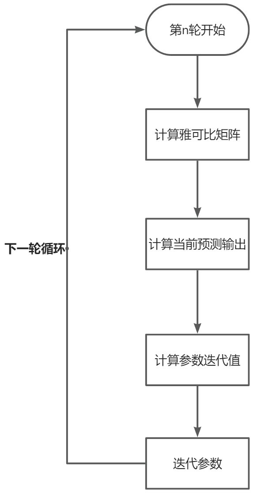

线性最小二乘
解决问题
存在多组观测值 。 采用 次多项式进行拟合 。 最小二乘法就是寻找一组 使得 残差平方和最小。 即求：
矩阵解法
有矩阵表达式：
其中：
定义损失函数为：
对 求偏导有：
得到：
在下面非线性最小二乘的基础上，所谓的 矩阵实际上也就是模型函数 的雅可比矩阵 ，所以形式和非线性下的 是一样的。
非线性最小二乘
解决问题
同样考虑多组观测值 。 由于非线性无法用矩阵描述，假设已知模型函数 。 既与观测样本又与模型参数 有关。 目标是找到与观测值拟合最好的参数 ，即最小化残差平方和：
由于非线性，无法书写成矩阵乘积形式，残差 的定义为：
取最小值时梯度为零，可得到 个参数的梯度方程：
高斯-牛顿算法
是关于 的函数，通常没有解析解，需要通过初始值迭代求解。
其中， 是迭代次数， 是偏移向量，每次迭代时，使用一阶泰勒展开线性化模型：
其中 代表模型函数关于模型参数的 雅可比矩阵：
观察不免得到：
记：
其中 为由初始值迭代而来的当前参数值，是常数。 为自变量。 通过巧妙的函数构建，将前半部分构造为当前迭代下的预测误差 为可计算的常数。 后半部分通过泰勒展开为关于 的函数，将 与 联系起来。 代入梯度方程有：
对于 维参数，这样的方程可以联立成方程组，称为正规方程：
可用矩阵表示为：
代码示例
随机生成椭球面 上的点。
依据椭球方程：
进行采样，并给点坐标添加噪声 。
a, b, c= np.random.uniform(1e-6, 1, 3)
xyz = []
for _ in range(1000):
phi = np.random.uniform(0, np.pi)
theta = np.random.uniform(0, 2 * np.pi)
noise = np.random.normal(0, 0.1)
x = np.sin(phi)*np.sin(theta)/a+noise
noise = np.random.normal(0, 0.1)
y = np.sin(phi)*np.cos(theta)/b+noise
noise = np.random.normal(0, 0.1)
z = np.cos(phi)/c+noise
xyz.append([x, y, z])
fig = plt.figure()
ax = fig.add_subplot(111, projection='3d')
ax.scatter([row[0] for row in xyz], [row[1] for row in xyz], [row[2] for row in xyz], s=3, c='blue')
plt.show()
得到随机1000个椭球采样点,在每个round内,选取batch个数据,并通过以下流程完成运算。

# h = a^2 * x^2 + b^2 * y^2 + c^2 * z^2 - 1
# dhda = 2a * x^2
# dhdb = 2b * y^2
# dhdc = 2c * y^2
# 通过公式计算雅可比矩阵
def diff(guess, xyz):
dhda = 2 * guess.item(0) * (xyz[0] ** 2)
dhdb = 2 * guess.item(1) * (xyz[1] ** 2)
dhdc = 2 * guess.item(2) * (xyz[2] ** 2)
return [dhda, dhdb, dhdc]
# 通过当前预测参数进行计算
def makeAGuess(guess, xyz):
result = guess.item(0)**2 * xyz[0] ** 2 + \
guess.item(1)**2 * xyz[1] ** 2 + \
guess.item(2)**2 * xyz[2] ** 2 - 1
return result
guess = np.array([[0.1], [0.1], [0.1]])
batches = 100
rounds = 100
modify_guess = []
for r in range(rounds):
J = []
guess_z = []
real_z = []
random.shuffle(xyz)
for _ in range(batches):
J.append(diff(guess, xyz[_]))
guess_z.append([makeAGuess(guess, xyz[_])])
real_z.append([0])
J = np.array(J)
guess_z = np.array(guess_z)
real_z = np.array(real_z)
delta_z = real_z - guess_z
delta_guess = np.linalg.pinv(J) @ delta_z
guess += delta_guess
modify_guess.append(guess.copy())
最小二乘与最大似然估计的关系
当假设高斯噪声存在时，对于概率的最大似然估计可以等效于对于残差的最小二乘法 更泛地说，最小二乘法更像一个已知模型与参数关系的问题（但也可以计算似然估计） 最大似然估计更像一个已知概率分布与参数关系的问题，而且在某些情况下是无法通过概率分布转换成模型的，譬如对于扔骰子我们只能知道其分布但无法推断其模型 对于模型：
假设噪声符合高斯噪声且独立均值为
可以认为观测值
所以对于单个观测值 有似然
对于 组观测数据有联合概率
由于存在指数，不妨对齐求对数最大化
也即最小二乘法的原理